Gamejams
- This Is Us
- Constellations
- Contrail Romantics
- Detritus Memory Dump
- That Cow Game
- Mindscapes Of Liz Ryerson
- Duality
I occasionally participate in game jams to keep my skills sharp, to meet new people and get spontaneously creative.
This Is Us
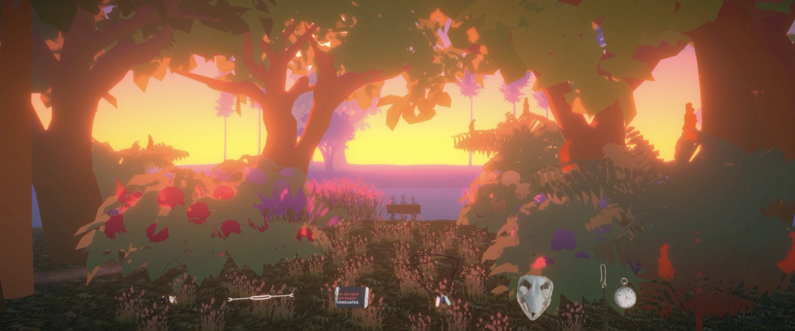
A collaboration between Adam, Moth and myself. Our gamejam brainstorming session turned into a 2 hour conversation about sincerity, creative practice and the pursuit of mastery. This "game" is that conversation and can either be experienced in 3D on GGJ website or as a video capture on youtube
Constellations
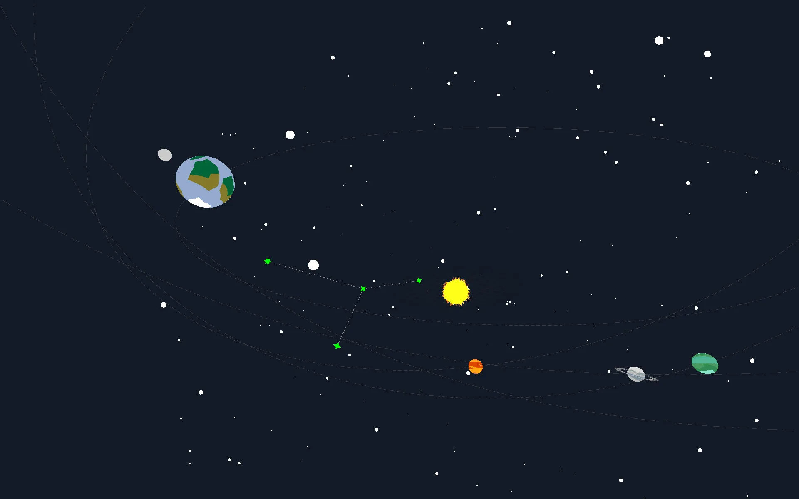
A first person puzzle mechanic prototype. In this prototype, you rotate planet orbits to match up constellations based on pictographic hints. Orbits are procedurally generated, so while constellations themselves are pre-determined, the solar system is always random.
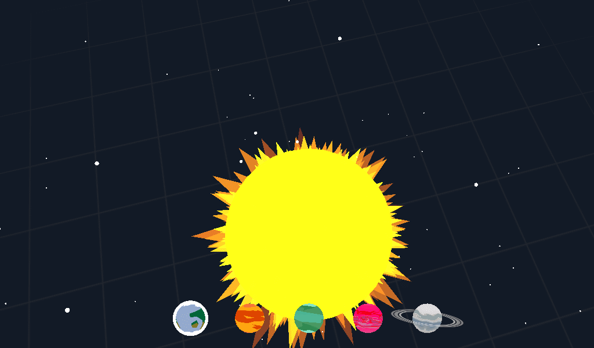 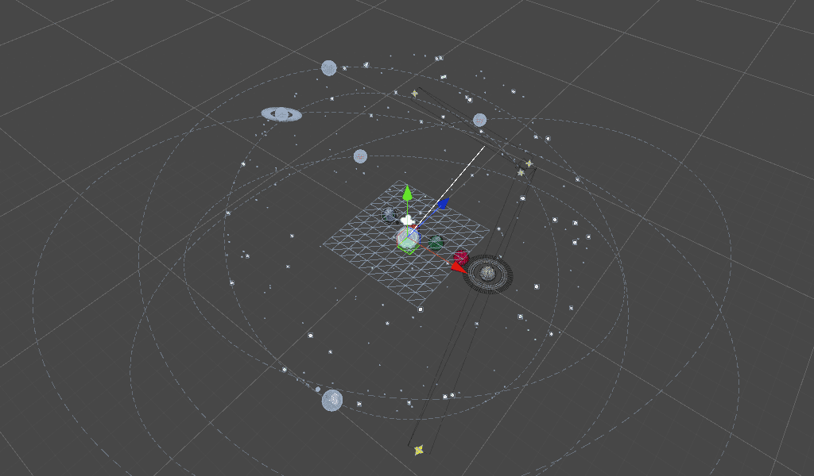
Contrail Romantics
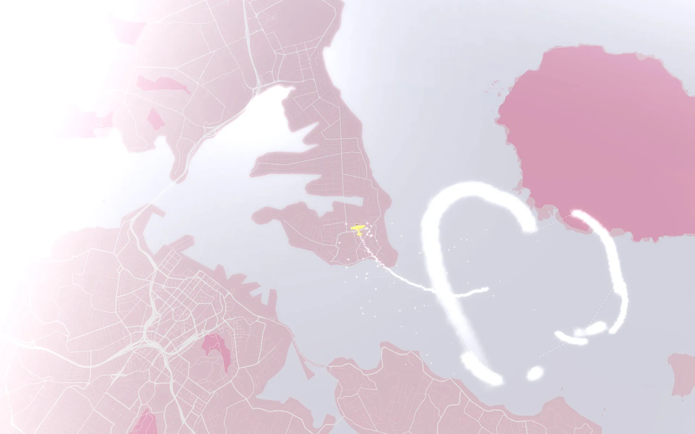
A game about drawing shapes in the sky. Pilot a skywriting plane and fulfill contrail messages for the folks below.
Created in 48 hours during Global Gamejam 2017. Download on GGJ
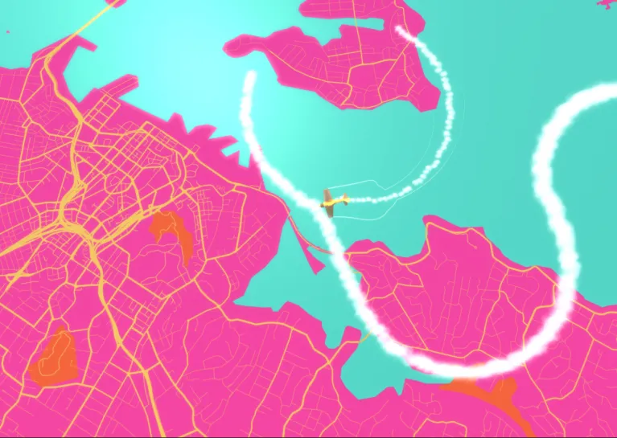 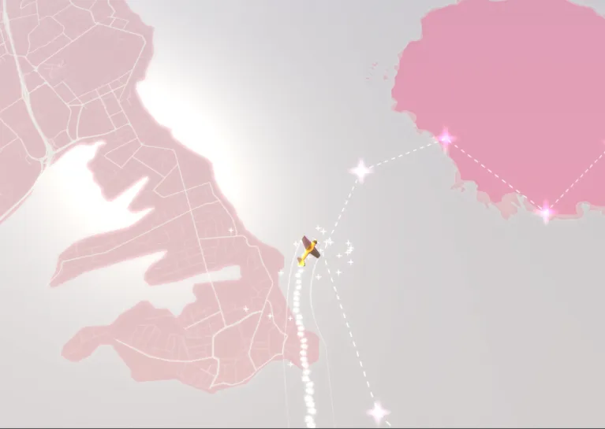
Detritus Memory Dump
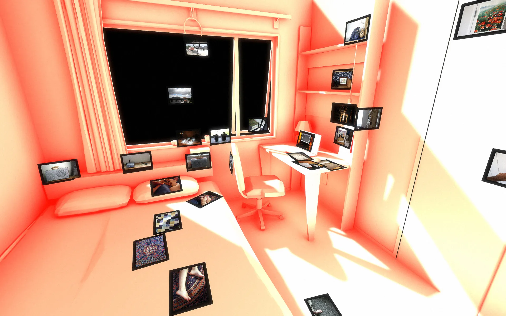
A memory palace of a room I used to live in. Explore few fleeting snippets of a bygone space.
Made in 48 hours during Global Gamejam 2016. Download on the GGJ website.
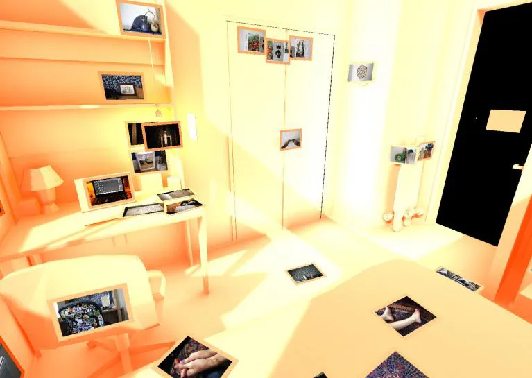 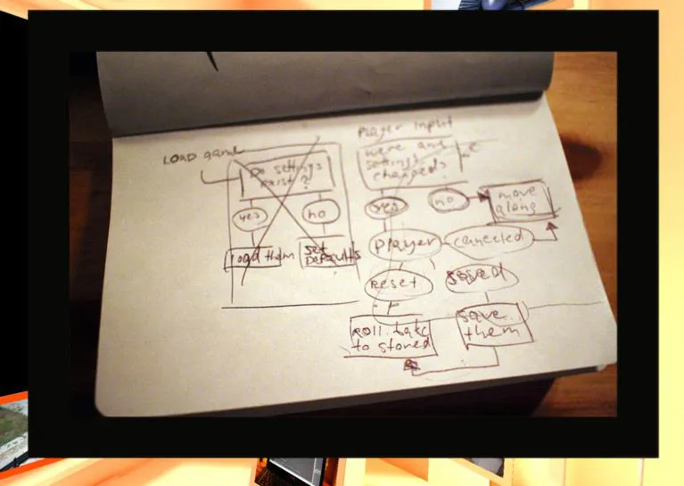
That Cow Game
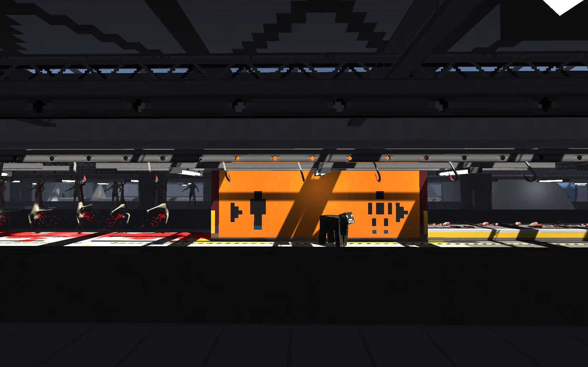
A cow at a meat factory. Made in 24 hours during ludum dare #33 with a theme "You are the monster".
Download on Itch.io
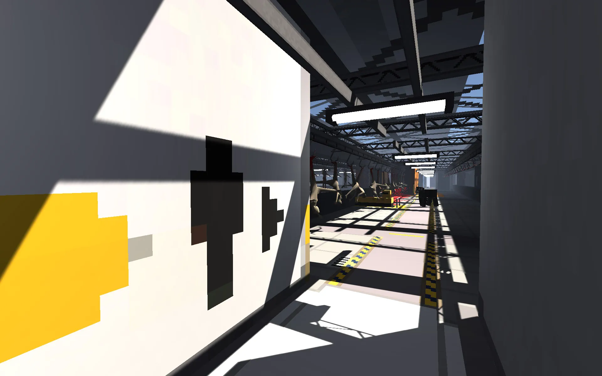 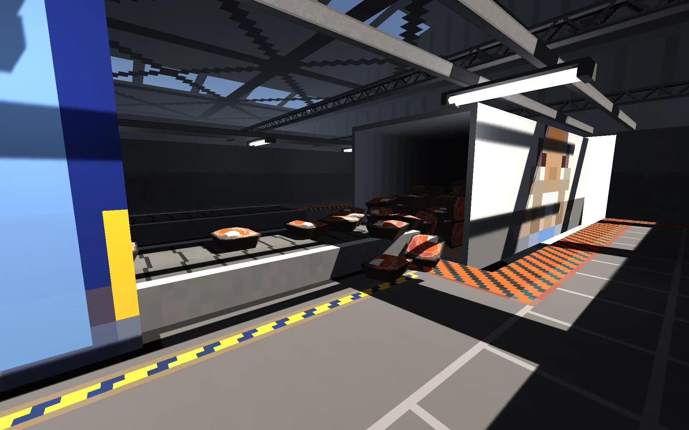
Mindscapes Of Liz Ryerson
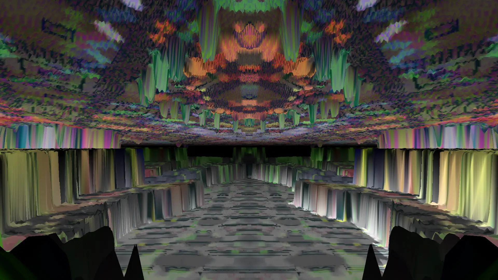
A Mashup of works by Liz Ryerso and Ian MacLarty.
A mashup interactive experience that combines Ian MacLarty's experimental game Southbank Portrait and Liz Ryerson's BAGAIJ10S works and her album SCRAPS.
This experiment uses Ian’s engine and framework to expose a different way of traversing Ryerson's works.
Duality
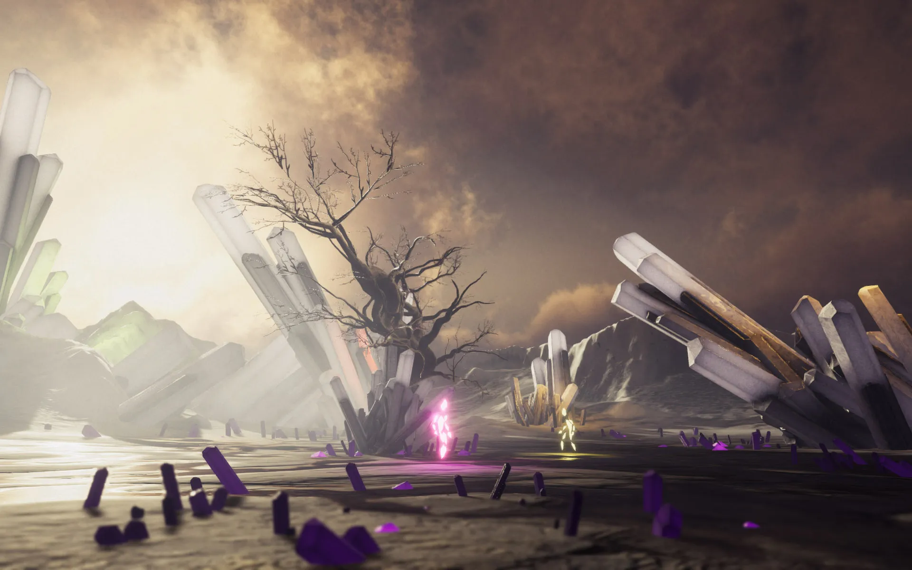
Duality is a two player Dash'n'Slash game, created in 48 hours for KiwiJam 2019 in collaboration with Adam Thompson.
Made using: * Unity3D * Speed tree * Quixel Mixer & Megascans * Substance Painter * MapMagic * Adobe Mixamo * Autodesk tools
Watch gameplay video on youtube Download and play on itch.io
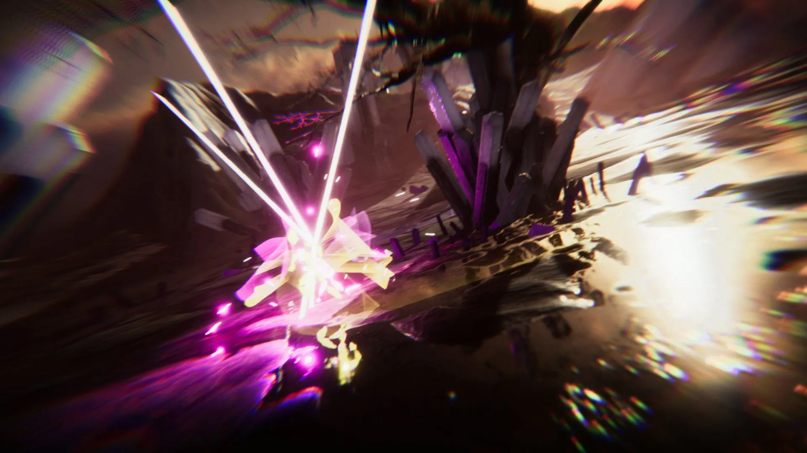 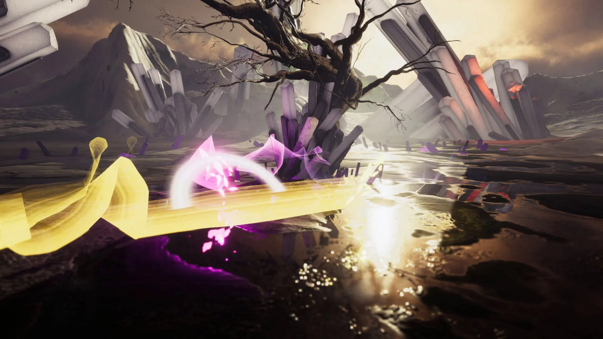